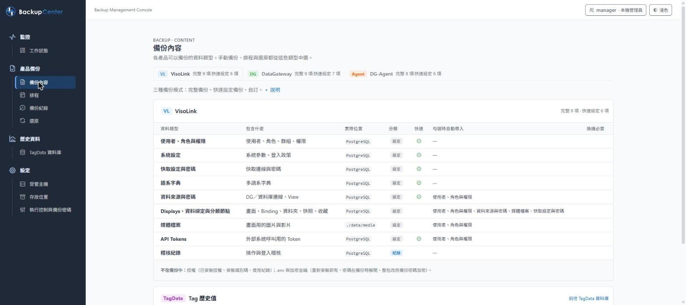

備份內容
列出 VL、DG、Agent 各自可以備份的資料類型。手動備份、排程與還原都從這些類型中選。本頁只能查看，不能修改。
三種備份模式

- 完整備份
- 全部資料類型。
- 快速設定備份
- 只含設定類（表中「快速」打勾），不含紀錄。
- 自訂
- 逐項勾選；「勾選時自動帶入」欄的相依類型會一起包含。
- 開啟「備份內容」，按上方分頁選產品。
- 看表格的「快速」「勾選時自動帶入」「換機必要」三欄，決定要用哪一種模式。
知道每一種模式會包含哪些資料。
要能換機還原，備份必須包含標示「換機必要」的類型；完整與快速設定備份都有。
失敗時先查
- 自訂時少了某些類型：相依類型會自動帶入，不能單獨取消。
VisoLink（VL）的資料類型
| 資料類型 | 包含什麼 | 快速設定 | 勾選時自動帶入 | 換機必要 |
|---|---|---|---|---|
| 使用者、角色與權限 | 使用者、角色、群組、權限 | ✓ | — | |
| 系統設定 | 系統參數、登入政策 | ✓ | — | |
| 快取設定與密碼 | 快取連線與密碼 | ✓ | — | |
| 語系字典 | 多語系字典 | ✓ | — | |
| 資料來源與密碼 | DG／資料庫連線、View | ✓ | 使用者、角色與權限 | |
| Displays、資料綁定與分類節點 | 畫面、Binding、資料夾、快照、收藏 | 使用者、角色與權限、資料來源與密碼、媒體檔案、快取設定與密碼 | ||
| 媒體檔案 | 畫面用的圖片與影片 | 使用者、角色與權限 | ||
| API Tokens | 外部系統呼叫用的 Token | ✓ | 使用者、角色與權限 | |
| 稽核紀錄 | 操作與登入稽核（紀錄類） | — |
完整 9 項、快速設定 6 項。不在備份中：授權（已安裝授權、安裝識別碼、使用紀錄）、安裝設定與加密金鑰（重新安裝即有；密碼在備份時解開、整包改用備份密碼加密）。
DataGateway（DG）的資料類型
| 資料類型 | 包含什麼 | 快速設定 | 勾選時自動帶入 | 換機必要 |
|---|---|---|---|---|
| 帳號與登入設定 | 登入模式、本機帳號 | ✓ | — | |
| 系統設定 | 系統參數 | ✓ | — | |
| 安裝設定與憑證 | 安裝設定（各種金鑰、資料庫密碼）與 gRPC 憑證 | ✓ | — | ✓ |
| Agent 註冊與信任 | 已註冊的 Agent 與信任狀態 | ✓ | 安裝設定與憑證 | ✓ |
| 與 VL 的配對 | 配對的 VL 與讀取權限 | ✓ | 安裝設定與憑證 | ✓ |
| 保存目的端與密碼 | TimescaleDB／InfluxDB 目的端連線與寫入政策 | ✓ | — | |
| 歷史保存設定 | Tag、寫入來源連結、保存分類、保存政策、序列名稱 | ✓ | 保存目的端與密碼 | |
| 回寫需求與紀錄 | 回寫送出與結果（紀錄類） | Agent 註冊與信任 | ||
| 稽核紀錄 | Agent 信任、指令、歷史資料操作紀錄（紀錄類） | — |
完整 9 項、快速設定 7 項。不在備份中：授權、DG 的資料保護金鑰（改用備份密碼加密）、Tag 歷史值與最新值（屬 TagData，第 8 章另外備份）。
DG-Agent 的資料類型
| 資料類型 | 包含什麼 | 快速設定 | 勾選時自動帶入 | 換機必要 |
|---|---|---|---|---|
| 連線與 Tag 設定 | 設備連線、Tag、寫入設定與密碼 | ✓ | OPC UA 憑證與信任清單 | |
| 上傳設定 | DG 位址與鎖定的 DG 憑證 | ✓ | Agent 身分 | ✓ |
| 緩衝政策 | 斷線時的緩衝上限與保留方式 | ✓ | — | |
| 本機帳號與 Agent 資料 | 管理介面帳號、名稱與描述 | ✓ | — | |
| OPC UA 憑證與信任清單 | OPC UA 用戶端憑證與信任的伺服器 | ✓ | — | |
| Agent 身分 | Agent ID、DG 發的註冊憑證、註冊狀態 | ✓ | — | ✓ |
| 回寫需求紀錄 | DG 送來的回寫與執行結果（紀錄類） | 連線與 Tag 設定 | ||
| 稽核紀錄 | 指令與登入稽核（紀錄類） | — |
完整 8 項、快速設定 6 項。不在備份中：授權、Agent 的緩衝資料（Tag 值都送進 DG，不在 Agent 保存）、加密金鑰（改用備份密碼加密）。